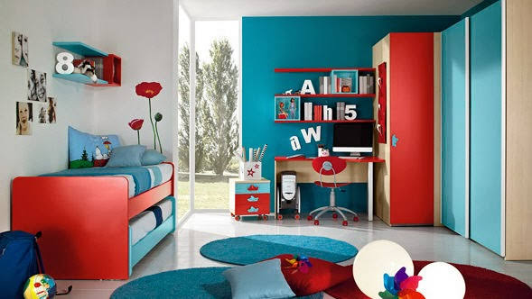
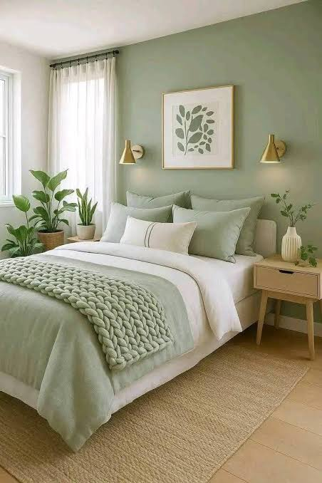
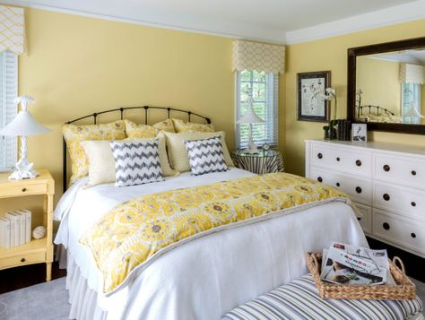

Dormitorio juvenil de diseño contemporáneo conformato por una paleta de tonos blanco, gris y rosa pastel. La habitación cuenta con:
Área de almacenamiento que tiene dos puertas.
Área de descanso en el centro de la estancia.
Área de estudio al que le entra luz natural.
Una estantería vertical de cinco niveles para almacenar cualquier tipo de objetos.
Espacio amplio y luminoso para que los niños puedan realizar sus actividades
Habitación2

Descripción
Dormitorio juvenil o infantil de estilo moderno conformato por una paleta de tonos turquesa, rojo intenso, blanco y conteniendo acabados en madera clara. La habitación cuenta con:
Área de almacenamiento en el lateral izquierdo con dos armarios.
Área de descanso en el lateral izquierdo.
Área de estudio en el centro de la estancia.
Unas repisas encima del escritorio para almacenar materiales de estudio.
Espacio amplio y luminoso para que los niños puedan realizar sus actividades.
Habitación3

Descripción
Dormitorio de estilo sereno y natural conformado por una paleta dominada por tonos verde salvia, blanco y detalles enmadera clara. La habitación cuenta con:
Área de almacenamiento compuesto por una cómoda en frente de la cama (no aparece en la imagen debido a la perspectiva).
Área de descanso en el centro de la estancia.
Área de estudio en el lateral izquierdo de la estancia (no aparece en la imagen debido a la perspectiva).
Mesillas a ambos lados de la cama para guardar objetos y accesorios.
Espacio amplio y luminoso proporcionado por las ventanas y las lamparillas que hay a ambos lados de la cama.
Habitación4

Descripción
Dormitorio de estilo clásico y luminoso compuesto de una paleta dominada por tonos amarillo , blanco y toques en gris y negro. La habitación cuenta con:
Área de almacenamiento en el lateral izquierdo con una cómoda.
Área de descanso en el centro de la estancia.
Área de estudio en frente de la cama (no aparece en la imagen debido a la perspectiva).
Mesillas a ambos lados de la cama para guardar objetos.
Espacio amplio y luminoso proporcionado por las ventanas que hay a ambos lados de la cama.